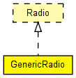

Generic radio module. The implementation is largely based on the Mobility Framework's SnrEval and Decider modules.
See also: Radio
Author: Andras Varga
The following diagram shows usage relationships between types. Unresolved types are missing from the diagram. Click here to see the full picture.
The following diagram shows inheritance relationships for this type. Unresolved types are missing from the diagram. Click here to see the full picture.
| Name | Type | Default value | Description |
|---|---|---|---|
| channelNumber | int | 0 |
channel identifier |
| transmitterPower | double | 20mW |
power used for transmission of messages (in mW) |
| bitrate | double |
(in bits/s) |
|
| thermalNoise | double | -110dBm |
base noise level (dBm) |
| pathLossAlpha | double | 2 |
used by the path loss calculation |
| snirThreshold | double | 4dB |
if signal-noise ratio is below this threshold, frame is considered noise (in dB) |
| sensitivity | double | -85mW |
received signals with power below sensitivity are ignored |
| headerLengthBits | int |
length of physical layer framing (preamble, etc) |
|
| bandwidth | double |
signal bandwidth, used for bit error calculation |
|
| modulation | string |
"BPSK", "16-QAM", "256-QAM" or "null"; selects bit error calculation method |
| Name | Value | Description |
|---|---|---|
| display | i=block/wrxtx |
| Name | Direction | Size | Description |
|---|---|---|---|
| uppergateIn | input |
from higher layer protocol (MAC) |
|
| uppergateOut | output |
to decider (decider connects to higher layer protocol, i.e. the MAC) |
|
| radioIn | input |
to receive frames (AirFrame) on the radio channel |
// // Generic radio module. The implementation is largely based on the // Mobility Framework's SnrEval and Decider modules. // // @see Radio // @author Andras Varga // simple GenericRadio like Radio { parameters: int channelNumber = default(0); // channel identifier double transmitterPower @unit("mW") = default(20mW); // power used for transmission of messages (in mW) double bitrate @unit("bps"); // (in bits/s) double thermalNoise @unit("dBm") = default(-110dBm); // base noise level (dBm) double pathLossAlpha = default(2); // used by the path loss calculation double snirThreshold @unit("dB") = default(4dB); // if signal-noise ratio is below this threshold, frame is considered noise (in dB) double sensitivity @unit("mW") = default(-85mW); // received signals with power below sensitivity are ignored int headerLengthBits @unit(b); // length of physical layer framing (preamble, etc) double bandwidth @unit("Hz"); // signal bandwidth, used for bit error calculation string modulation; // "BPSK", "16-QAM", "256-QAM" or "null"; selects bit error calculation method @display("i=block/wrxtx"); gates: input uppergateIn @labels(PhyControlInfo/down); // from higher layer protocol (MAC) output uppergateOut @labels(PhyControlInfo/up); // to decider (decider connects to higher layer protocol, i.e. the MAC) input radioIn @labels(AirFrame); // to receive frames (AirFrame) on the radio channel }